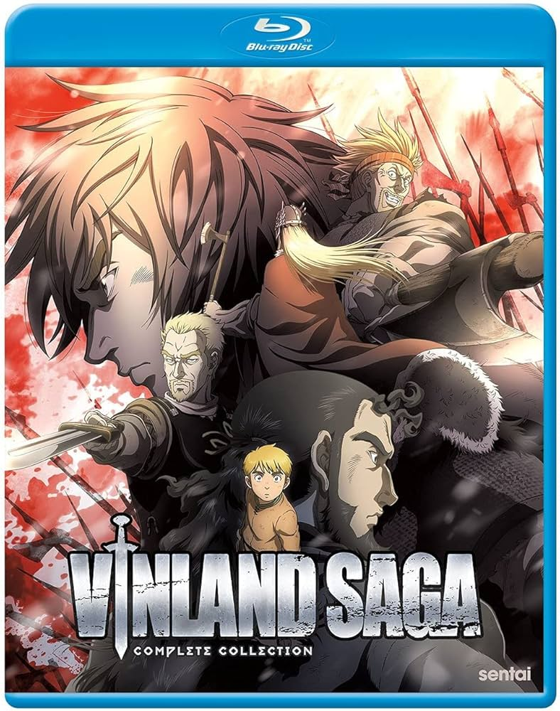
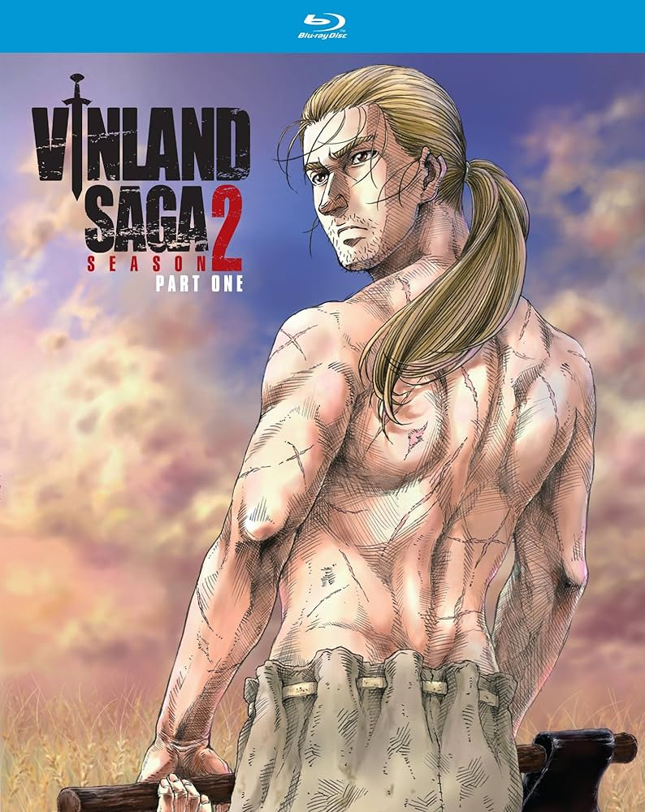
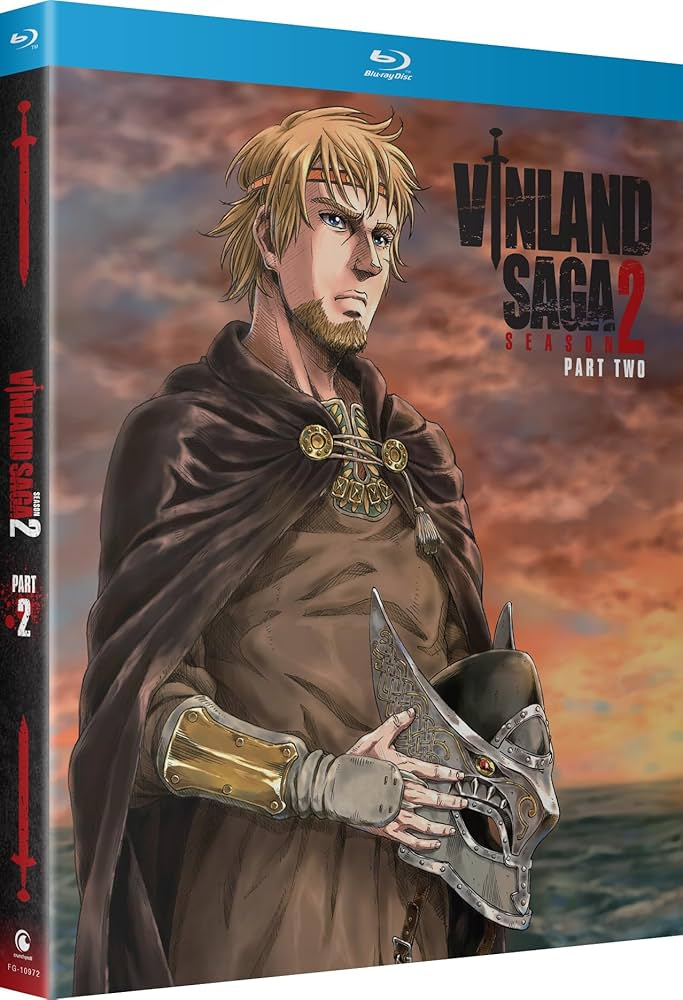

Макет сайта-магазина по мульт-сериалу "Vinland Saga" *не для коммерческого использования*
!Представляем наш ассортимет физических копий всех сезонов "Саги о Винланде"!
В продаже есть следующие видео-материалы
Записи первого сезона
Blu Ray издание первого сезона

Полное издание первого сезона "Саги о Винланде" на физическом носителе, включающее в себя 24 эпизода мульт-сериала. Цена: 1900 руб.
Лимитированное Blu Ray издание первого сезона
Лимитированное издание первого сезона "Саги о Винланде" на физическом носителе, включающее в себя 24 эпизода мульт-сериала,
копии музыкальных композиций на физическом носителе, артбук, два тематических пина, два тематических стикера,
акриловую фигурку Торфинна и карту мест из сериала. Цена: 6980 руб.
Записи второго сезона
Blu Ray издание второго сезона - 1 часть

Неполное издание второго сезона "Саги о Винланде" на физическом носителе, включающее в себя 12 эпизодов мульт-сериала. Цена: 1000 руб.
Blu Ray издание второго сезона - 2 часть

Неполное издание второго сезона "Саги о Винланде" на физическом носителе, включающее в себя 12 эпизодов мульт-сериала. Цена: 1000 руб.